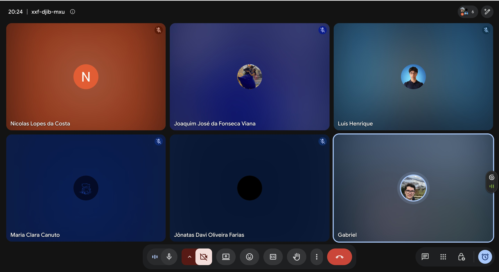
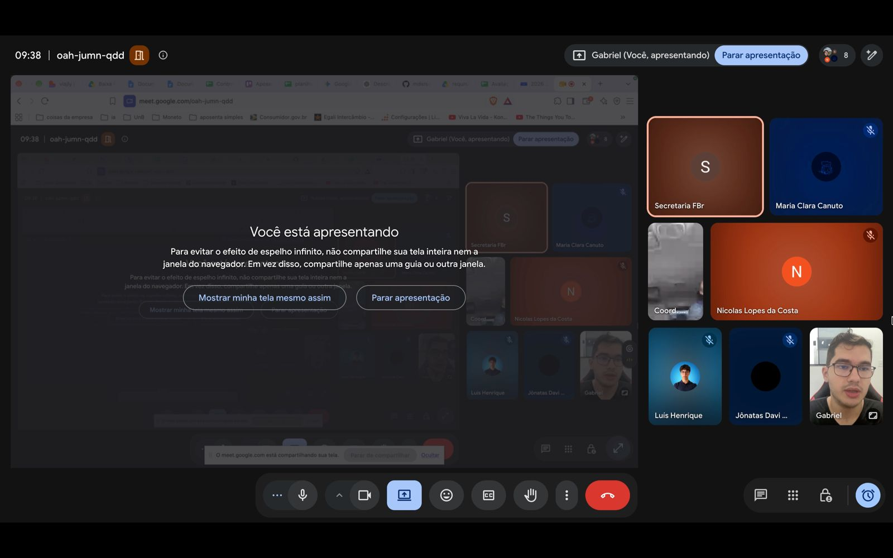
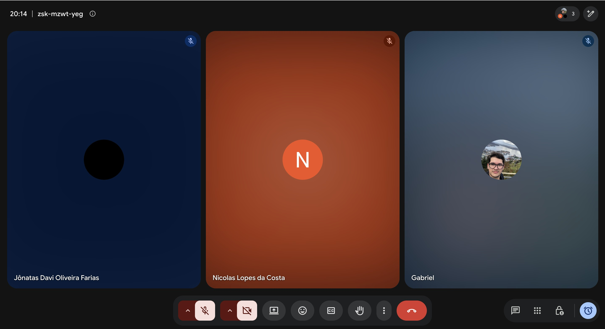
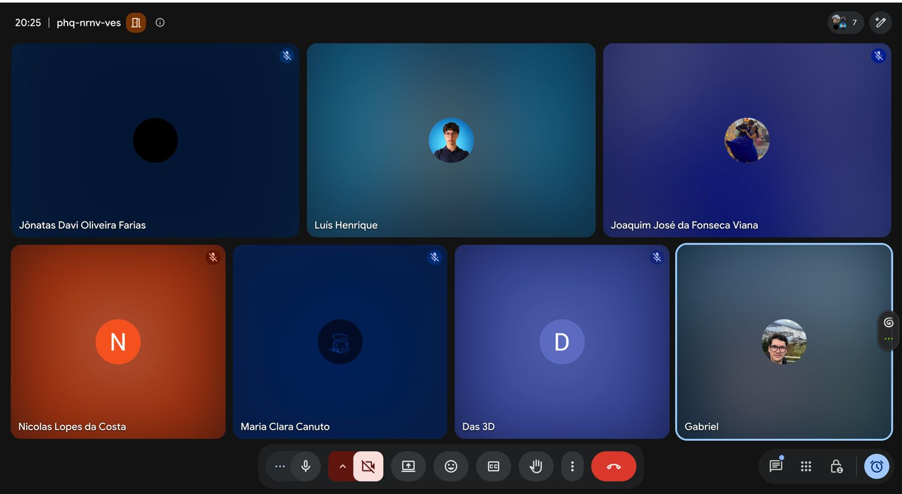
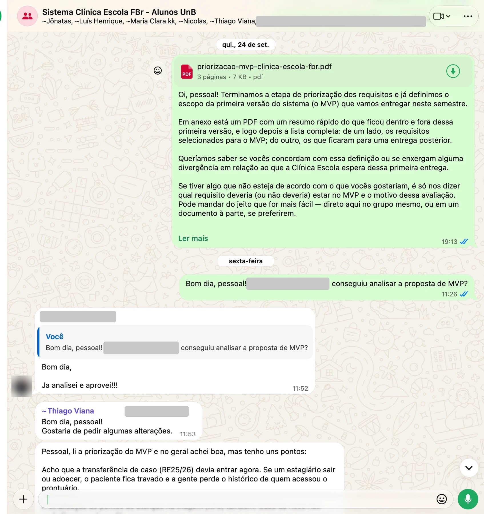
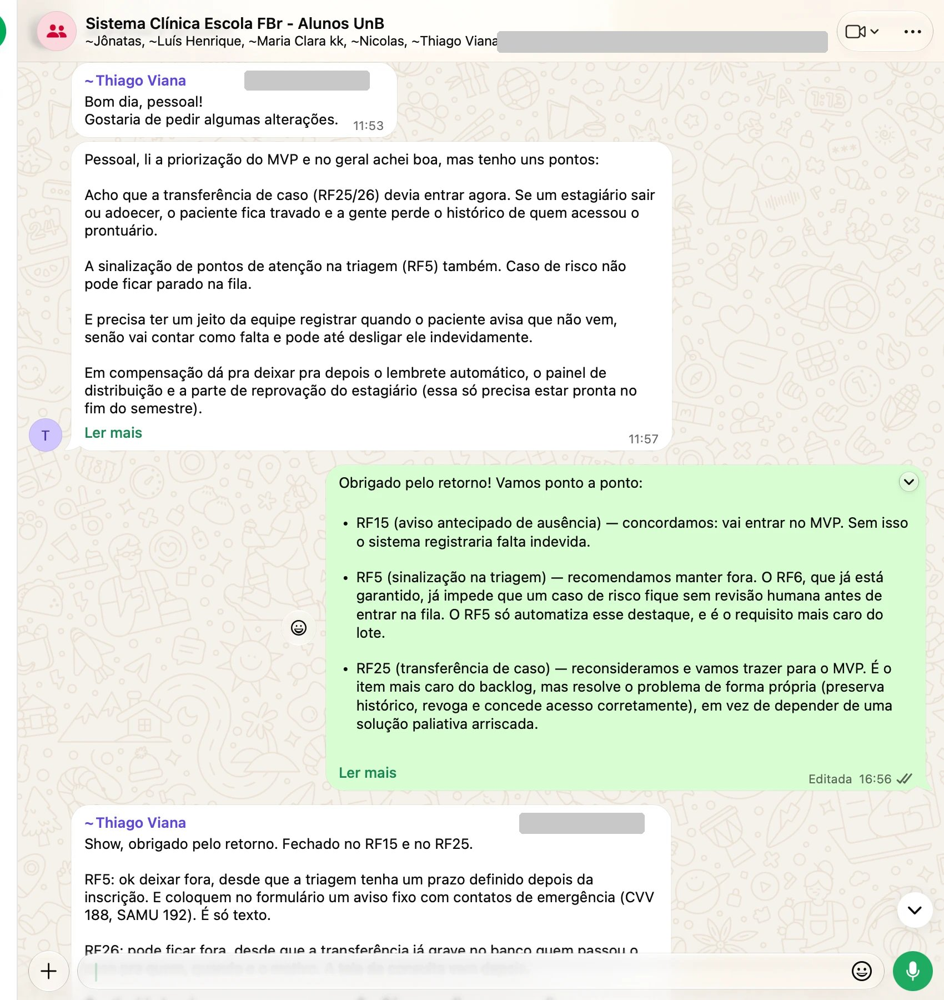
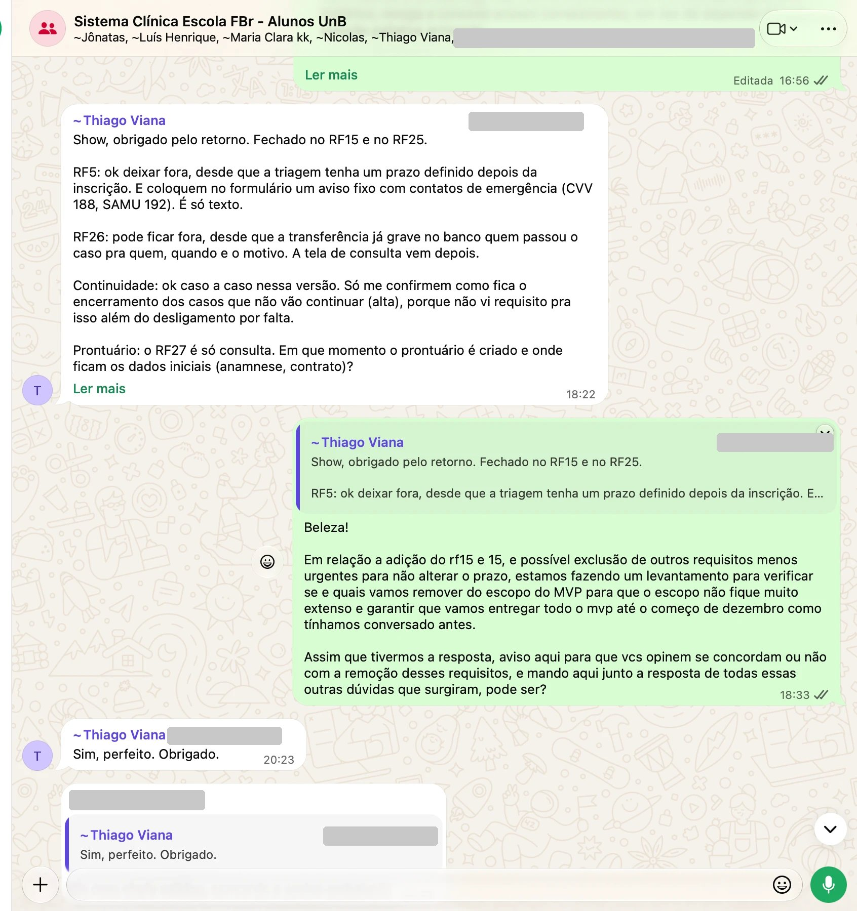
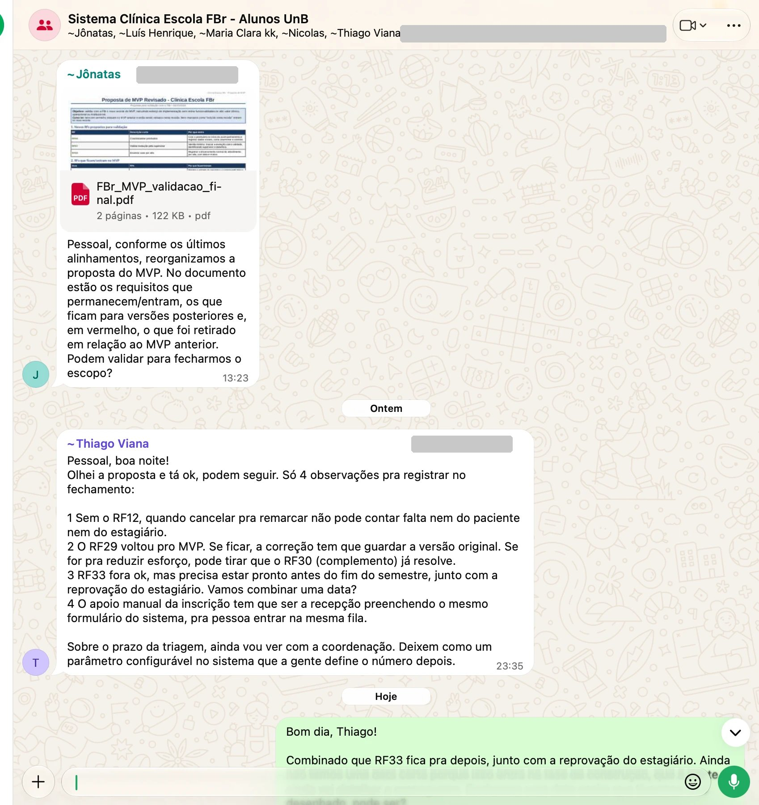
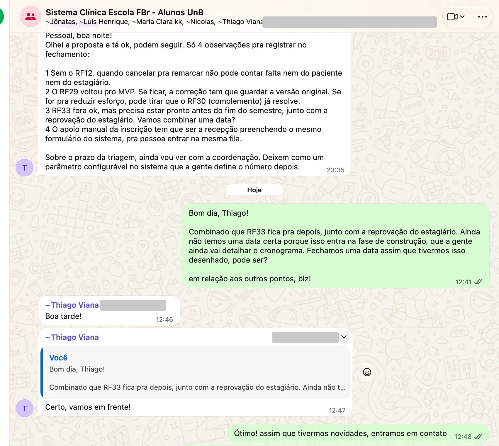
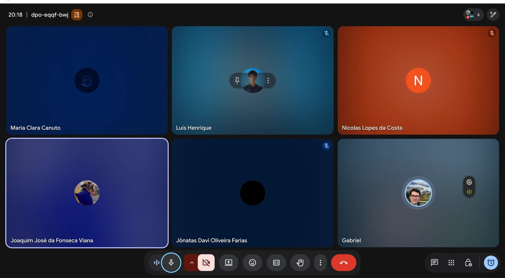

Reuniões da Unidade 2#
Esta página reúne os registros das reuniões realizadas durante a Unidade 2 para elicitação, análise, priorização, validação e acompanhamento dos requisitos do projeto Clínica Escola FBr.
Reunião de divisão de tarefas e requisitos (FDD) até 22/09#
Data: 17/09/2026 Local: Reunião on-line (Google Meet) Participantes: Gabriel da Cunha Barbaceli; Joaquim José da Fonseca Viana; Jônatas Davi Oliveira Farias; Luís Henrique; Maria Clara Canuto; Nicolas Lopes da Costa.

Figura 4 — Registro da reunião de divisão de tarefas e requisitos (FDD), realizada em 17/09/2026.
Resumo#
A reunião teve como objetivo distribuir as tarefas da equipe, priorizar as correções das issues abertas pelo professor e alinhar o levantamento de requisitos conforme o processo FDD, visando à entrega de 22/09.
1. Entregas prioritárias até 22/09#
- Corrigir o grupo 1 de issues abertas pelo professor, considerado o conjunto mais urgente; as demais ficam para depois do dia 24.
- Executar em paralelo o levantamento de requisitos da atividade com entrega até 22/09.
- Concluir os materiais preferencialmente até 21/09, permitindo consolidação e revisão antes da entrega.
2. Divisão das issues prioritárias#
- Nicolas: solução proposta.
- Gabriel: cronograma e entregas.
- Luís: processo de engenharia de requisitos.
- Jônatas: intervenção social.
- Maria Clara: cenário atual.
As issues estão no GitHub. Os integrantes podem ser atribuídos como responsáveis, mas não devem fechar as issues; após os PRs e a entrada na main, o monitor deve ser avisado para realizar o fechamento.
3. Divisão das características de produto#
- Jônatas: CP1 — inscrição on-line; CP3 — fila de espera e consulta de posição.
- Maria Clara: CP5 — distribuição dos casos entre supervisores e estagiários; CP9 — emissão de declaração de comparecimento.
- Luís: CP2 — triagem e classificação de prioridade; CP6 — prontuário eletrônico, evolução e relatório final.
- Joaquim: CP11 — segurança, sigilo e controle de acesso; CP8 — registro da contribuição social.
- Nicolas: CP4 — agendamento, confirmação e remarcação; CP7 — controle de assiduidade e alertas.
- Gabriel: CP12 — acessibilidade e usabilidade; CP10 — indicadores e relatórios institucionais.
O levantamento deve seguir o processo de FDD, incluindo features e áreas correspondentes, e não apenas a separação entre requisitos funcionais e não funcionais. A página "Estudos de FDD", na Unidade 1, foi indicada como referência.
4. Apoio e acompanhamento#
- A equipe deve se apoiar mutuamente nas dúvidas sobre as características e o trabalho de cada integrante.
- Joaquim poderá apoiar dúvidas relacionadas às características de produto que ele elaborou.
- Foi sugerida uma reunião semanal com o monitor, possivelmente às quintas-feiras à noite, conforme a disponibilidade dele.
- Gabriel ficou de cobrar o monitor sobre o fechamento de uma issue relacionada ao vídeo da apresentação e verificar sua disponibilidade para acompanhamento semanal.
5. Próximas reuniões e abordagem#
- Para a semana a partir de 24/09, considerar reuniões com o pessoal da faculdade para avaliar o valor de negócio e validar o MVP.
- Como foi escolhida uma abordagem ágil, foi discutida a necessidade de contato frequente com o cliente, com sugestão de reuniões pelo menos a cada 15 dias.
- Os contatos com o cliente devem permitir ajustes e alinhamento com a abordagem adotada e com o processo FDD.
6. Organização e documentação#
- A divisão de tarefas foi disponibilizada no grupo (WhatsApp) para consulta.
- A reunião foi registrada e a ata incluída na documentação do projeto.
- Foi sugerida a criação de um documento para facilitar o entendimento do ciclo e dos processos; antes disso, foi indicada a consulta à página "Estudos de FDD" da Unidade 1.
Encerramento#
A reunião definiu a divisão das tarefas para a entrega de 22/09, priorizando as issues mais urgentes e o levantamento de requisitos conforme o FDD. A equipe buscará consolidar os materiais até 21/09 para revisão e alinhar o acompanhamento com o monitor e as próximas reuniões.
Reunião de avaliação de valor de negócio com a Clínica Escola FBr#
Data: 24/09/2026 Local: Reunião on-line (Google Meet) Participantes: Gabriel da Cunha Barbaceli; Luís Henrique; Maria Clara Canuto; Nicolas Lopes da Costa; Jônatas Davi Oliveira Farias; Robson — coordenador do curso de Psicologia (FBr); Karla — secretaria (FBr).

Figura 5 — Registro da reunião de avaliação de valor de negócio com a Clínica Escola FBr, realizada em 24/09/2026.
Resumo#
A reunião apresentou à Clínica Escola FBr o processo e a planilha de avaliação de valor de negócio dos 62 requisitos funcionais levantados até o momento, atendendo à solicitação do professor de que a definição do MVP fosse feita de forma técnica, e não por achismo.
Contexto#
- O projeto segue sem problemas relevantes; a equipe ainda não iniciou a codificação, estando na fase de levantamento e detalhamento técnico dos requisitos.
- As dúvidas anteriores sobre a ficha de inscrição/anamnese e as restrições de acesso administrativo, levantadas em reunião anterior, já haviam sido esclarecidas por escrito por Robson antes deste encontro.
- Cronograma esperado: início da codificação em outubro; MVP concluído no início de dezembro, ao fim do semestre da equipe; caso confirmado, as inscrições da Clínica Escola passam a ser feitas via sistema a partir de janeiro.
Processo de avaliação de valor de negócio#
- Escala de 1 a 4 apresentada à Clínica Escola: 4 — indispensável (deve estar no MVP); 3 — muito importante, mas o sistema opera um tempo sem isso; 2 — agrega valor, mas pode esperar; 1 — não é prioridade para esta versão.
- A equipe entregou uma planilha com os 62 RFs (título, descrição e uma avaliação-rascunho própria, com justificativa) como ponto de partida.
- A Clínica Escola deve revisar cada linha e preencher a nota final, a justificativa e, quando houver divergência da avaliação da equipe, um campo de observação.
- Dado o volume de requisitos, não seriam discutidos individualmente na reunião; foi trabalhado um exemplo (RF1) para alinhar o entendimento, e a planilha foi enviada à Clínica Escola para preencher o restante.
Pontos discutidos#
- RF1 — Registrar solicitação de atendimento on-line: avaliação da equipe (4 — indispensável) confirmada por Karla, que reforçou ser o primeiro passo a ser implementado no sistema.
- RF2 — Emitir comprovante de inscrição: ficou em aberto o mecanismo de identificação do comprovante — código único ou CPF do paciente como credencial de acesso, associado a uma senha. Karla sugeriu o uso do CPF, por ser mais individualizado e, na visão dela, mais simples de implementar; a equipe ainda vai decidir, possivelmente consultando Robson. Também ficou em aberto o canal de confirmação da inscrição (site, e-mail ou aviso na tela).
Decisões#
- A Clínica Escola (Karla e Robson) vai preencher a planilha de avaliação de valor de negócio dos 62 requisitos, a partir do rascunho da equipe.
- Após a devolutiva, a equipe vai cruzar essa avaliação com o esforço técnico de implementação de cada requisito para chegar à proposta técnica de MVP.
- A proposta de MVP resultante será enviada de volta à Clínica Escola para validação.
Próximos passos#
- Até 25/09 (noite): Karla revisa a planilha e tenta concluir o preenchimento.
- Até o fim de semana (26 a 28/09), no máximo: devolutiva completa da planilha pela Clínica Escola.
- 29/09: entrega da atividade da equipe ao professor da disciplina.
- Equipe: recuperar e repassar ao grupo o e-mail do professor Robson mencionado na chamada, e, após a devolutiva, cruzar valor de negócio com esforço técnico para montar a proposta de MVP.
Encerramento#
A reunião alinhou a metodologia de avaliação de valor de negócio dos requisitos com a Clínica Escola, com Karla assumindo o preenchimento da planilha ainda essa semana. O próximo passo da equipe é cruzar essas notas com o esforço técnico de implementação para propor tecnicamente o MVP, a ser validado com a Clínica Escola antes do início da codificação.
Reunião de divisão de tarefas: revisão de requisitos e priorização do MVP#
Data: 24/09/2026 Local: Reunião on-line (Google Meet) Participantes: Gabriel da Cunha Barbaceli; Jônatas Davi Oliveira Farias; Nicolas Lopes da Costa.

Figura 6 — Registro da reunião de divisão de tarefas: revisão de requisitos e priorização do MVP, realizada em 24/09/2026.
Resumo#
A reunião formalizou a divisão da equipe em dois subgrupos para as duas entregas de 29/09: correção dos requisitos a partir do feedback recebido de outra equipe, e priorização dos requisitos com definição técnica do MVP.
Contexto#
- A equipe precisa entregar duas atividades até 29/09, ao meio-dia: a correção dos RFs/RNFs apontados pela equipe "sem requisitos" e a priorização dos requisitos com definição técnica do MVP.
- Gabriel já havia definido previamente a divisão em dois subgrupos e usou a reunião para comunicar e detalhar essa divisão ao grupo.
Decisões#
- A equipe foi dividida em dois subgrupos: Maria Clara, Luís e Joaquim ficam com a correção dos requisitos; Gabriel, Nicolas e Jônatas ficam com a priorização e definição do MVP.
- Nicolas pontua o esforço técnico dos requisitos funcionais de CP1 a CP7 (RF1 a RF32).
- Jônatas pontua o esforço técnico dos requisitos funcionais de CP8 a CP14 (RF33 a RF62) e classifica os requisitos não funcionais.
- Após receber as pontuações, Gabriel cruza o resultado com o valor de negócio já preenchido por Robson (Clínica Escola FBr) para montar a matriz de priorização e a proposta de MVP.
- O escopo de MVP levantado na primeira call com a FBr, que ficou muito amplo, não será usado como ponto de partida — o MVP será definido do zero, a partir da matriz de priorização.
Pontos discutidos#
- Um integrante estava com uma PR pendente por dúvida sobre o escopo do MVP levantado anteriormente com a FBr, ainda sem resposta do professor. Gabriel orientou que esse escopo prévio não é mais válido para a atividade atual, e que o tamanho do MVP só deve ser reavaliado depois de pronta a matriz de priorização, com apoio do monitor se necessário.
- Ainda não há data marcada para uma nova reunião com a Clínica Escola FBr; a ideia inicial é enviar a proposta de MVP para aprovação pelo grupo do WhatsApp, deixando uma conversa mais formal para quando a equipe começar a implementar funcionalidades.
- O monitor não confirmou presença nesta reunião; Gabriel pretende buscar uma call individual com ele para atualizá-lo sobre o andamento.
Próximos passos#
- Até 26/09: prazo preferencial para Nicolas e Jônatas concluírem a pontuação de esforço técnico.
- Até 27/09 (noite), no limite manhã de 28/09: prazo final para a entrega das pontuações, dando tempo para Gabriel montar a matriz e a proposta de MVP.
- 29/09, até meio-dia: entrega das duas atividades ao professor da disciplina.
Encerramento#
A reunião formalizou a divisão da equipe em dois subgrupos e detalhou as responsabilidades de cada um nas duas entregas de 29/09. O próximo passo é Nicolas e Jônatas pontuarem o esforço técnico dos requisitos, para que Gabriel possa cruzar com o valor de negócio da FBr e propor o MVP.
Reunião de correções finais do site e estrutura de documentação#
Data: 01/10/2026 Local: Reunião on-line (Google Meet) Participantes: Gabriel da Cunha Barbaceli; Joaquim José da Fonseca Viana; Luís Henrique; Maria Clara Canuto; Nicolas Lopes da Costa; Jônatas Davi Oliveira Farias.

Figura 7 — Registro da reunião de correções finais do site e estrutura de documentação, realizada em 01/10/2026.
Resumo#
A reunião teve como objetivo revisar os ajustes finais do site, organizar a documentação e alinhar as entregas seguintes.
1. Correções e organização do site#
- Manter a estrutura geral já revisada do site e registrar os ajustes antes da publicação.
- Retirar o vídeo de apresentação e o histórico de versão da posição atual; foi discutida a possibilidade de reorganizar esses conteúdos em locais mais adequados.
- Avaliar a colocação do histórico de versão ao final da documentação.
- Manter as seções de requisitos em formato retrátil, considerado mais adequado para reduzir a quantidade de texto visível.
- Avaliar também a organização retrátil da lista de features do FDD e de outras áreas extensas da documentação.
- Verificar uma forma de tornar os requisitos não funcionais mais organizados, incluindo a possibilidade de seção retrátil.
2. Vídeo de apresentação#
- Foi sugerida a criação de uma página inicial para a unidade, com o vídeo de entrega e atalhos para as páginas relacionadas.
- A proposta deverá ser testada considerando a organização do menu lateral e a possibilidade de evitar ambiguidade visual. Caso não funcione bem, poderá ser descartada.
3. Documentação e materiais de apoio#
- A documentação possui grande volume de texto; a organização retrátil foi identificada como uma forma de facilitar a navegação e reduzir a necessidade de rolagem.
- Foi criado um material com referências, ferramentas, skills, componentes de interface e conteúdos utilizados no desenvolvimento do site, a ser compartilhado com a equipe.
- Foi mencionado um conteúdo baseado no livro de Agassi para complementar uma parte ainda não inserida na documentação.
4. Entregas e divisão de responsabilidades#
- Até 07/10 — resolver as três issues que permaneciam pendentes: Gabriel, Joaquim e Jônatas.
- Até 07/10 — elaborar DoR e DoD: Maria Clara, Nicolas e Luís. Luís ficará responsável por liderar e revisar o conteúdo antes da publicação.
- DoR e DoD devem permanecer consistentes entre si, evitando contradições entre os documentos.
- Existe um esboço de DoD na página de equipe/comunicação que poderá ser utilizado como referência.
- Até 10/10 — realizar a revisão final antes da entrega, incluindo consolidação da visão do produto e atualização do site.
- Subir a validação do MVP para o cliente; a validação ainda depende do retorno de Robson.
- Após a conclusão das atividades, gravar o vídeo de apresentação.
- Gabriel ficará responsável pela elaboração dos slides da apresentação e fará os ajustes necessários antes de a equipe utilizá-los.
5. Próximos passos#
- Registrar no grupo da equipe as tarefas e os encaminhamentos definidos na reunião.
- Concluir as três issues pendentes e os documentos DoR/DoD até 07/10.
- Realizar a revisão final, atualizar o site, consolidar a visão do produto e encaminhar a validação do MVP até 10/10.
- Gravar o vídeo após a conclusão das demais atividades.
Encerramento#
A reunião consolidou os ajustes finais de organização do site e a divisão das entregas restantes. O próximo movimento é concluir as issues e a documentação até 07/10, seguido da revisão final e das demais atividades previstas até 10/10.
Validação do MVP com a Clínica Escola FBr#
Data: 24/09/2026 a 08/10/2026 (duas rodadas) Local: Grupo de WhatsApp "Sistema Clínica Escola FBr - Alunos UnB" Participantes: Robson Luís de Araújo — coordenador do curso de Psicologia (FBr); Thiago Cardoso Viana — Diretor Financeiro e de Tecnologia (FBr); Gabriel da Cunha Barbaceli; Jônatas Davi Oliveira Farias; demais integrantes da equipe acompanhando o grupo.
Resumo#
A validação do recorte do MVP foi feita por mensagens no grupo de WhatsApp com a Clínica Escola FBr, canal previsto na seção 7.2 — Comunicação com o Cliente. O resultado — RFs aprovados, requisitos para entregas futuras, ajustes solicitados e pontos em aberto — está consolidado na seção 10.2.4 do Backlog de Produto.
1ª rodada (24/09 a 02/10/2026)#
- Em 24/09, a equipe enviou a proposta de MVP (
priorizacao-mvp-clinica-escola-fbr.pdf), com os requisitos dentro e fora da primeira versão. - Em 02/10, Robson informou que já havia analisado e aprovado a proposta.
- No mesmo dia, Thiago pediu alterações: incluir a transferência de caso (RF25), a sinalização de pontos de atenção na triagem (RF5) e o registro do aviso de ausência pelo paciente (RF15). Em compensação, indicou que poderiam ficar para depois o lembrete automático (RF13), o painel de distribuição (RF24) e a reprovação do estagiário, que só precisa estar pronta no fim do semestre.
- A equipe respondeu ponto a ponto: RF15 e RF25 entram no MVP; recomendou manter o RF5 fora, já que a revisão humana da triagem (RF6) está garantida.
- Thiago fechou a inclusão de RF15 e RF25 e aceitou deixar RF5 e RF26 fora, sob condições: prazo definido para a triagem, aviso fixo com os contatos do CVV (188) e do SAMU (192) no formulário de inscrição e registro, na transferência, de quem passou o caso para quem, quando e por quê. Também aceitou tratar a continuidade entre semestres caso a caso e perguntou como ficariam o encerramento por alta e a criação do prontuário.
- A equipe informou que reorganizaria o escopo para manter a entrega do MVP no início de dezembro e traria as respostas às dúvidas, e Thiago concordou.
2ª rodada (06/10 a 08/10/2026)#
- Em 06/10, a equipe enviou a proposta revisada, com os requisitos que permanecem, entram e saem do MVP e com três novos requisitos que respondem às dúvidas da 1ª rodada: RF66 (criar o prontuário com anamnese e contrato), RF67 (validação da evolução pelo supervisor) e RF68 (encerramento do caso por alta).
- Em 07/10, Thiago aprovou a proposta ("Olhei a proposta e tá ok, podem seguir") com quatro observações de fechamento: o cancelamento para remarcar não conta falta do paciente nem do estagiário; a correção de evolução (RF29) deve guardar a versão original; o relatório final (RF33) fica fora, mas deve estar pronto antes do fim do semestre, junto com a reprovação do estagiário; e o apoio manual à inscrição deve ser a recepção preenchendo o mesmo formulário do sistema. Pediu ainda que o prazo da triagem fosse um parâmetro configurável, a ser definido pela coordenação.
- Em 08/10, a equipe confirmou os pontos e combinou que a data do RF33 e da reprovação será fechada quando o cronograma da fase de construção estiver detalhado. Thiago encerrou a validação ("Certo, vamos em frente!").
Evidências#
As capturas abaixo, recolhidas em menus expansíveis, reproduzem a conversa no grupo. Os números de telefone dos participantes foram ocultados. As mensagens longas aparecem truncadas pelo próprio WhatsApp ("Ler mais"), mas o trecho visível basta para identificar cada etapa da validação.
Ver Figura 8 — Envio da proposta de MVP pela equipe (24/09), aprovação de Robson e início do pedido de alterações de Thiago (02/10).

Ver Figura 9 — Pontos levantados por Thiago (RF25, RF5, RF15 e itens que podem ficar para depois) e resposta da equipe (02/10).

Ver Figura 10 — Fechamento de RF15 e RF25, condições para RF5 e RF26, dúvidas sobre alta e criação do prontuário e combinação da revisão do escopo (02/10).

Ver Figura 11 — Envio da proposta revisada (06/10) e aprovação com quatro observações de fechamento (07/10).

Ver Figura 12 — Resposta da equipe às observações e encerramento da validação por Thiago (08/10).

Encerramento#
A validação foi concluída sem divergências em aberto. Ficaram para definição posterior o valor do prazo máximo de triagem e a data de entrega do relatório final de evolução (RF33), registrados em Pendências de validação com a FBr.
Reunião de acompanhamento: validação do MVP, GitHub Pages e preparação para a apresentação#
Data: 08/10/2026 Local: Reunião on-line (Google Meet) Participantes: Gabriel da Cunha Barbaceli; Maria Clara Canuto; Luís Henrique; Nicolas Lopes da Costa; Joaquim José da Fonseca Viana; Jônatas Davi Oliveira Farias.

Figura 13 — Registro da reunião de acompanhamento: validação do MVP, GitHub Pages e preparação para a apresentação, realizada em 08/10/2026.
Resumo#
A reunião teve como objetivo acompanhar as entregas, organizar a atualização do site e alinhar a preparação para a apresentação.
1. Atualização do MVP e do site#
- A validação do MVP pelo cliente foi realizada por WhatsApp (ver Validação do MVP com a Clínica Escola FBr). Gabriel está atualizando o GitHub Pages com as evidências dessa validação, a nova versão do MVP, os requisitos incluídos e removidos, a matriz de priorização e as tabelas revisadas.
- Gabriel já enviou a branch e irá criar um pull request (PR). A atualização inclui pequenas alterações nos scripts JavaScript desenvolvidos por Luís Henrique.
- Luís Henrique e Jônatas Davi revisarão o PR, verificando inconsistências e possíveis problemas na atualização do site.
2. Organização do GitHub#
- Foi encaminhada a criação de um template padrão para issues de desenvolvimento, incluindo referências ao DoR e ao DoD.
- Também será revisada a estrutura do GitHub Projects, para identificar ajustes ou melhorias que facilitem o acompanhamento do trabalho.
3. Documentação do DoR e do DoD#
- Maria Clara prevê entregar o DoR em 08/10, até meia-noite.
- O DoD está em um pull request e ainda não foi aprovado nem incorporado à branch main. Maria já o revisou e pretende registrar comentários.
- A revisão do DoD por Nicolas será coordenada com a revisão do DoR, para facilitar a comparação estrutural entre os documentos, que têm finalidades distintas.
4. Prazos e preparação para a apresentação#
- Até 13/10 (terça-feira): finalizar as atividades pendentes e preparar os materiais para a apresentação.
- 15/10 (quinta-feira): apresentação do projeto.
- Após a incorporação do DoR, do DoD e da validação do cliente à branch main, ainda será necessário concluir os slides, gravar o vídeo da apresentação, consolidar a visão do produto e o escopo final e atualizar o site.
- Gabriel ficará responsável pelos slides. A ata da reunião será enviada ao grupo da equipe.
5. Combinados de acompanhamento#
- Continuar registrando as pautas das reuniões no local combinado.
- Manter as evidências das validações e atividades documentadas.
Encerramento#
A equipe revisou o andamento das entregas do MVP e da documentação e alinhou os itens restantes para a apresentação de 15/10. O próximo passo é concluir o DoR, revisar e incorporar os documentos e a validação ao site, além de finalizar os materiais de apresentação.